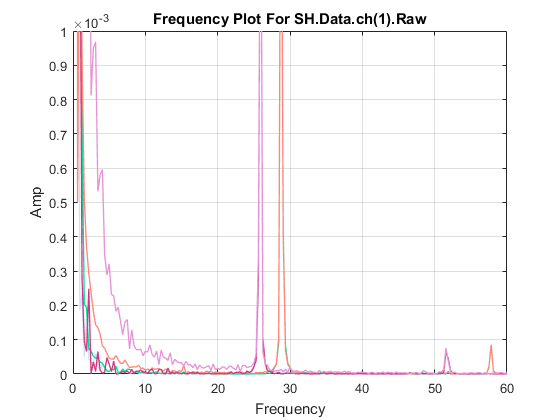
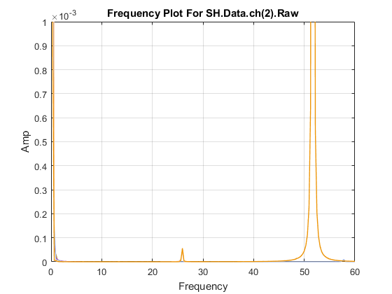
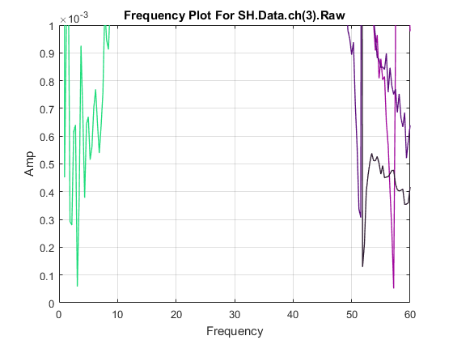
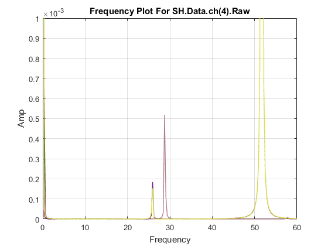
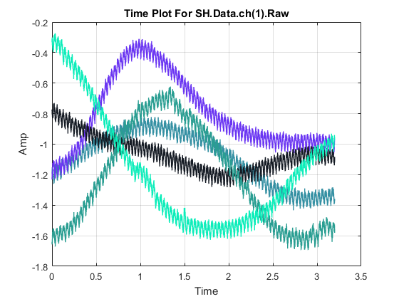
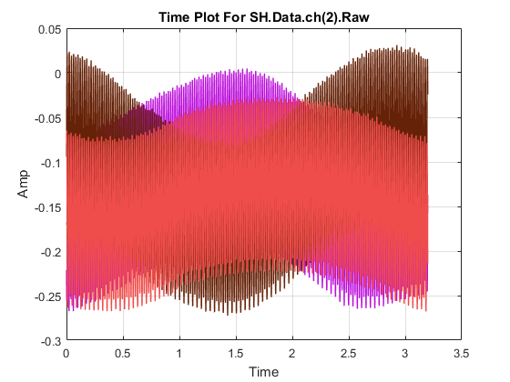
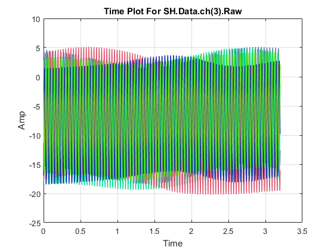
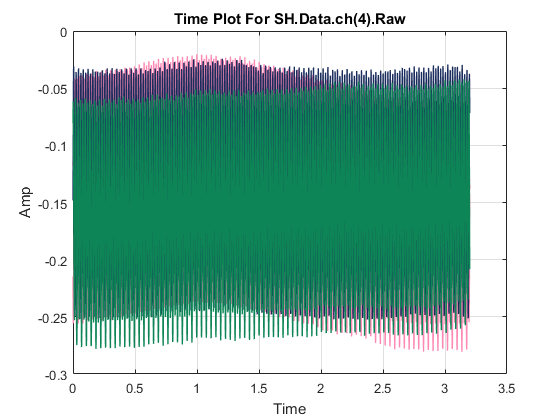

Code to extracy frequency data at 25.85 Hz
At thif requecncy there seems to be a superharmonic response since at steady state response the second mode at 51.7 Hz is excited. It should be noted that the first natural frequency was completly decayed at the time the data was gathered. As such, it shows that the system reached a equilibrium point.
df = 0.3125; dt=0.00039062501; ave='noave'; Freq = [5 10 13.50 15 20 25 30 35 40 45 50 51.70 55]; Options1 = {'no', 1}; Options2 = {'no', 2}; NUMS=25; NUMS2={'85'}; SH = []; for j = 1:length(NUMS); Data = []; for i = 1:5; FileName = strcat('freq_00',figureTag(NUMS(j)),'_',NUMS2(j,1), ... '_',int2str(i),'.mat'); FileName=char(FileName{1}); load(FileName,'-mat'); Data.ch(1).Raw(:,i) = Time_chan_1; Data.ch(1).Cor(:,i) = ManFilt(Time_chan_1, dt); % Data.ch(2).Raw(:,i) = Time_chan_2; Data.ch(2).Cor(:,i) = ManFilt(Time_chan_2, dt); % FreqRange = asd(Data.ch(2).Cor(:,i), dt, [], ave); % Data.ch(3).Raw(:,i) = Time_chan_3; Data.ch(3).Cor(:,i) = ManFilt(Time_chan_3, dt); % Data.ch(4).Raw(:,i) = Time_chan_4; Data.ch(4).Cor(:,i) = ManFilt(Time_chan_4, dt); end SH(j).Data = Data; %S(j).obj = SignalAnalysis( Data, Noise.t); SH(j).num = NUMS(j); end clearvars -except SH dt ave Freq FreqRange TimeRange ... NUMS NUMS2 df Options1 Options2 N=length(SH.Data.ch(2).Raw(:,1)); for k=1:4 figure for m = 1:5 X = fft(SH.Data.ch(k).Raw(:,m),N)*dt; if mod(N,2)==0 X1=X(1:ceil(N/2),:); else X1=X(1:ceil(N/2)-1,:); end power = real(X1.*conj(X1))/(N*dt)*2; %figure plot(FreqRange, power, 'color', rand(1,3), 'linewidth', 1.0) xlabel('Frequency') ylabel('Amp') name = strcat('SH.Data.ch(', num2str(k), ')', ... '.Raw'); title(['Frequency Plot For ', name]) axis([0,60,0,0.001]); grid on hold on end end hold off for k=1:4 figure for m = 1:5 plot(TimeRange, SH.Data.ch(k).Raw(:,m), ... 'color', rand(1,3), 'linewidth', 1.0) xlabel('Time') ylabel('Amp') name = strcat('SH.Data.ch(', num2str(k), ')', ... '.Raw'); title(['Time Plot For ', name]) %axis([0,60,0,0.001]); grid on hold on end end       